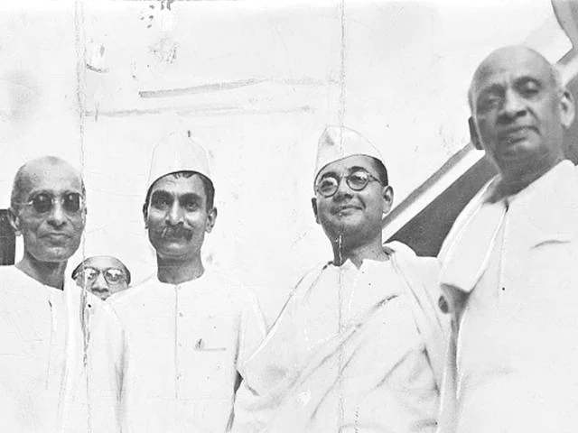
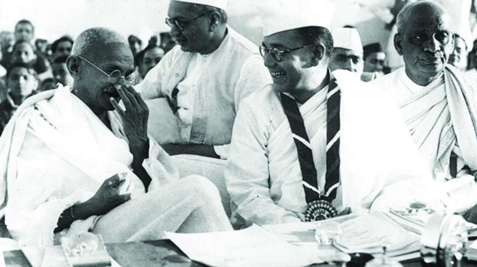

TRIBUTE TO OUR NATIONAL HERO: Netaji Subhash Chandra Bose
"Political Life of Subhash Chandra Bose"
After a few years, Bose returned to India as he resigned from his civil service job in April 1921 and later joined the Indian National Congress to fight for the independence of India. Subhash Chandra Bose started the newspaper known as 'Swaraj', and took charge of publicity for the Bengal Provincial Congress Committee. In 1923, Bose was elected as the President of All India Youth Congress and as the Secretary of Bengal State Congress. He was also editor of the newspaper called 'Forward', founded by his mentor Mr.Chittaranjan Das, and he served as the CEO of the Calcutta Municipal Corporation. By December 1927, Bose was appointed as the General Secretary of the INC.
In November 1934, he wrote the first part of his book 'The Indian Struggle', which was about nationalism and India's independence movement during 1920–1934, but the British government banned the book. By 1938, he agreed to accept nomination as the Congress President, and presided over the Haripur session. However, due to his strong differences with Mahatma Gandhi and Jawaharlal Nehru, he resigned in 1939.

